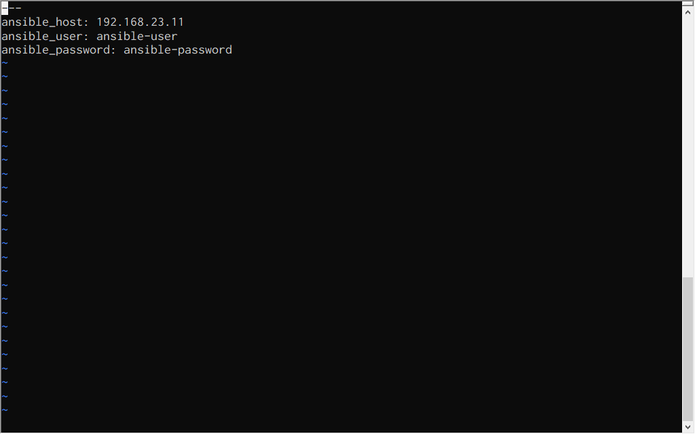
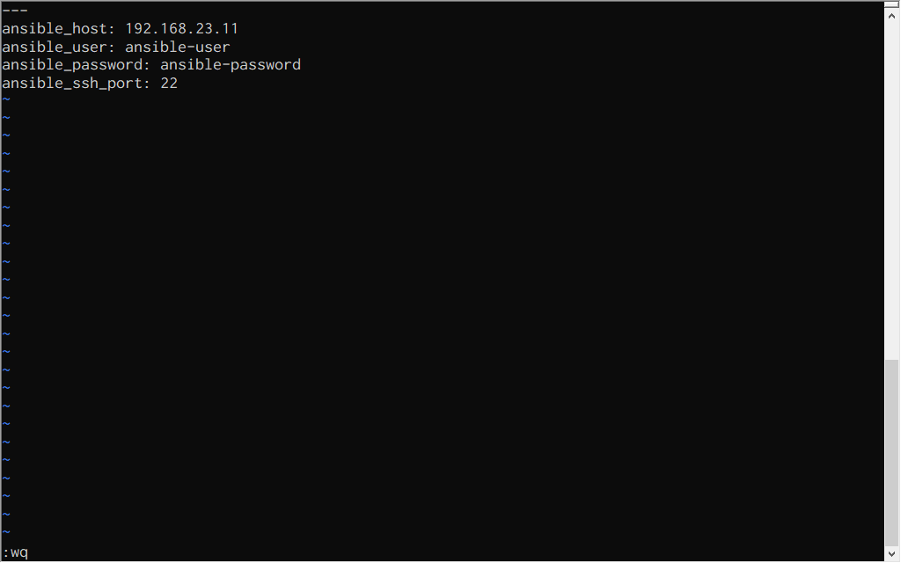
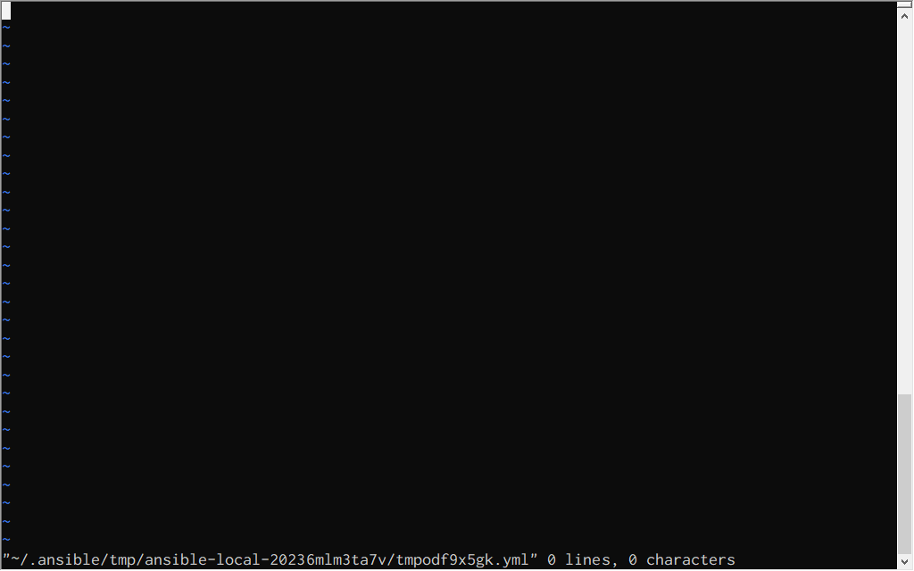
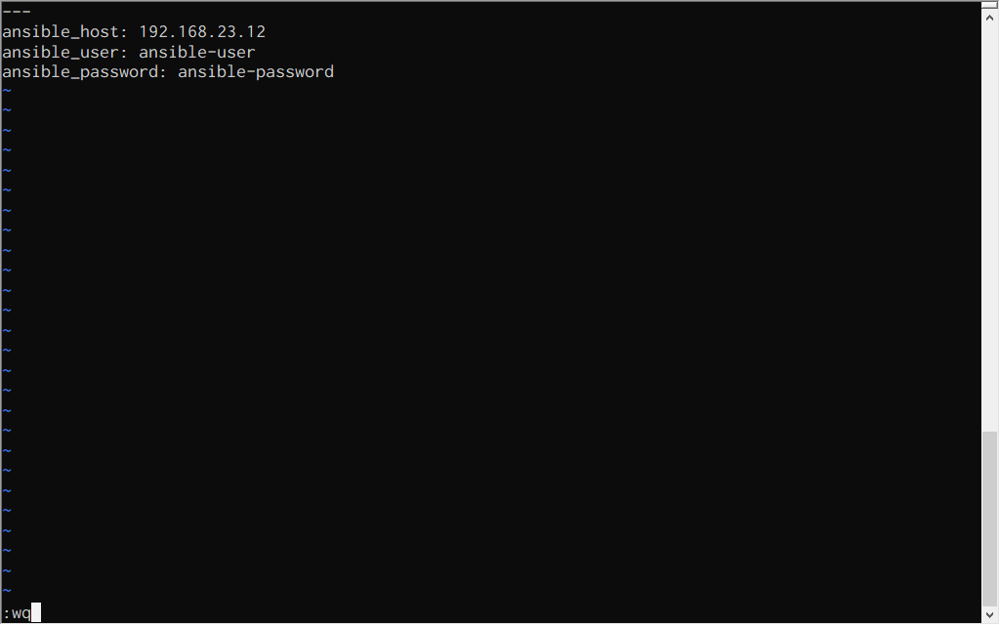

ファイルを暗号化¶
暗号化するファイル¶
host_vars/hydrogen.yml ファイル
---
ansible_host: 192.168.23.11
ansible_user: ansible-user
ansible_password: ansible-password
既存のファイルを暗号化（ encrypt ）¶
既存のファイルを暗号化します。暗号化するときにパスワードを入力します。このパスワードはファイルを復号化するときなどに使用します。
piyo@vmpc:~/example/vault$ ansible-vault encrypt host_vars/hydrogen.yml
New Vault password:
Confirm New Vault password:
Encryption successful
piyo@vmpc:~/example/vault$
暗号化後のファイルの内容です。
piyo@vmpc:~/example/vault$ cat host_vars/hydrogen.yml
$ANSIBLE_VAULT;1.1;AES256
31383638666439653661633539363334353064643236326332656334363431313561336334306337
6662653535633561316139626661636463353638643130340a363362336666633735373430366338
36316465396233373363353161353366616531633933393762363337346534626239353266393262
3961303730323364340a623939326630653837353431316238326338343262343362396433323463
33373831306263363733346366313538363363626563336635303530643032313033393332386237
31303139386662336636333738333635376432353864356236653564316265346463336336306561
32306334613939623663653830373935386638623736636135656263323532623837613163643163
32613632656532653338333633666235613662376262663136373736373962353338323038313337
3134
piyo@vmpc:~/example/vault$
暗号化したファイルの内容を確認（ view ）¶
「 既存のファイルを暗号化（ encrypt ） 」で暗号化したファイルの内容を確認します。確認するときは暗号化するときに指定したパスワードを入力します。
piyo@vmpc:~/example/vault$ ansible-vault view host_vars/hydrogen.yml
Vault password:
---
ansible_host: 192.168.23.11
ansible_user: ansible-user
ansible_password: ansible-password
piyo@vmpc:~/example/vault$
暗号化したファイルの内容を編集（ edit ）¶
「 既存のファイルを暗号化（ encrypt ） 」で暗号化したファイルの内容を編集します。編集するときは暗号化するときに指定したパスワードを入力します。
piyo@vmpc:~/example/vault$ ansible-vault edit host_vars/hydrogen.yml
Vault password:
暗号化前の内容がエディタで編集可能になります。
ファイルを編集し、保存／終了します。
編集の終了後に内容を確認します。
piyo@vmpc:~/example/vault$ cat host_vars/hydrogen.yml
$ANSIBLE_VAULT;1.1;AES256
36333361373263326333363435653134343266346364326338323562313534616630656666616364
6665666465633539396566393864616231326438363339620a343964366131326166373738663766
64613830326635386364323662383733393136663332353838616265656561316532383638303933
3431643438323831350a383537626437613566626638313933653830393631393664323066646161
64643932626564646636383737633163323536323032396363396539626361386665653437303561
33346630646165363930376562306162396461363531336238386138326264316234383739663234
63646537303966343864306632333330396431643938306234373066383834373537386134623938
66336262306237323132376362316564393864303138613164626633353431306265623132316238
30393430646233383633306232616365663835386333666539646430356632353639393234313237
3632666236626637633361343138383034303064613032363037
piyo@vmpc:~/example/vault$
piyo@vmpc:~/example/vault$ ansible-vault view host_vars/hydrogen.yml
Vault password:
---
ansible_host: 192.168.23.11
ansible_user: ansible-user
ansible_password: ansible-password
ansible_ssh_port: 22
piyo@vmpc:~/example/vault$
暗号化したファイルを復号化（ decrypt ）¶
「 暗号化したファイルの内容を編集（ edit ） 」で編集したファイルを復号化します。復号化するときは暗号化するときに指定したパスワードを入力します。
piyo@vmpc:~/example/vault$ ansible-vault decrypt host_vars/hydrogen.yml
Vault password:
Decryption successful
piyo@vmpc:~/example/vault$
復号化後のファイルの内容です。
piyo@vmpc:~/example/vault$ cat host_vars/hydrogen.yml
---
ansible_host: 192.168.23.11
ansible_user: ansible-user
ansible_password: ansible-password
ansible_ssh_port: 22
piyo@vmpc:~/example/vault$
新規に暗号化したファイルを作成（ create ）¶
新規に暗号化したファイルを作成します。最初に暗号化するときのパスワードを入力します。このパスワードはファイルを復号化するときなどに使用します。
piyo@vmpc:~/example/vault$ ansible-vault create host_vars/helium.yml
New Vault password:
Confirm New Vault password:
編集画面になったら、ファイルの内容を作成します。
ファイルの内容を保存／終了します。
作成したファイルの内容です。暗号化されています。
piyo@vmpc:~/example/vault$ cat host_vars/helium.yml
$ANSIBLE_VAULT;1.1;AES256
61316164393061313732303434623265666233663832643336633735633763386534616635306536
3234646363333266363065353364636431303831366331640a616535366333333334323737313932
62373564653066643632396530333633336636623437613065376666313164366163373865313565
3335613430643063390a353539303166616462326331623039363134323833346562313666336439
65336234623735326638643031323361353465643737323135333761343162623463333537323134
63636162386538656637333132663332303030323836383461316534363864323633336530623261
66653139303033663733313137373538303261643431383539646365663036326166303365663065
35396138356461373162323061383364663462636436356366616432336235633366373836636536
3035
piyo@vmpc:~/example/vault$